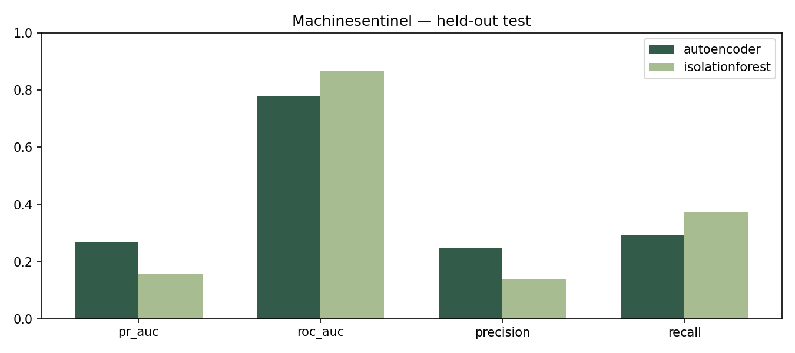
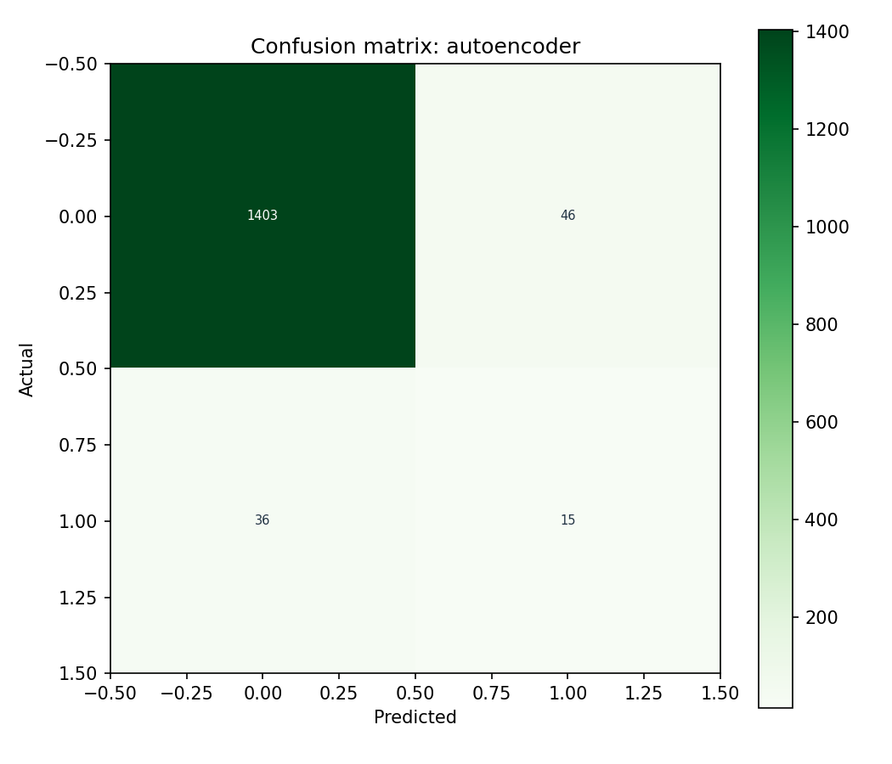

Reproducible experiment report / Raport eksperymentu
Seed 42. Frozen 70/15/15 train / validation / test split. Model selection on validation only. Selected model: autoencoder. Test observations: 1500. Training: 11.6 seconds.
| Model | pr_auc | roc_auc | precision | recall |
|---|---|---|---|---|
| autoencoder | 0.26648 | 0.77679 | 0.24590 | 0.29412 |
| isolationforest | 0.15635 | 0.86537 | 0.13768 | 0.37255 |


Run train.ps1 for training; evaluate.ps1 for saved weights and frozen test set. Full metadata: artifacts/config.json. Source checksum: f601f14294bcf190f9d720676b7f0aea46a26cde9ab8ebc7b4f8174d9d26b252. Library versions in reports/environment.txt. Machine-readable metrics in metrics.json and metrics.csv. No external certification is claimed.